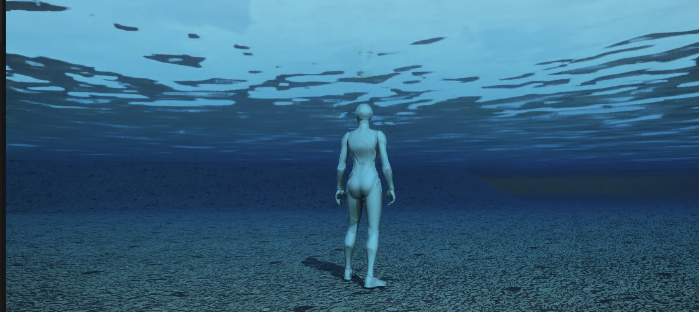
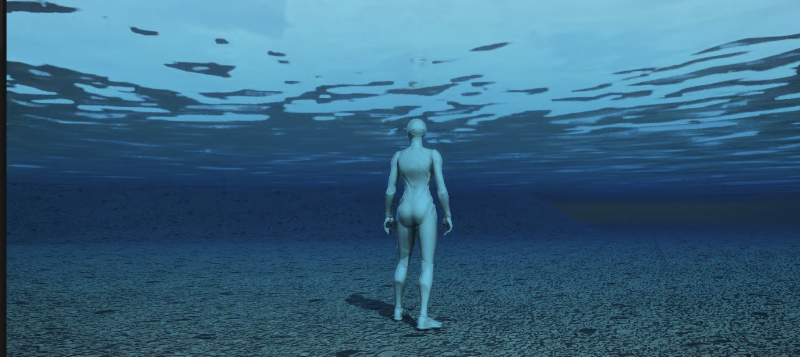
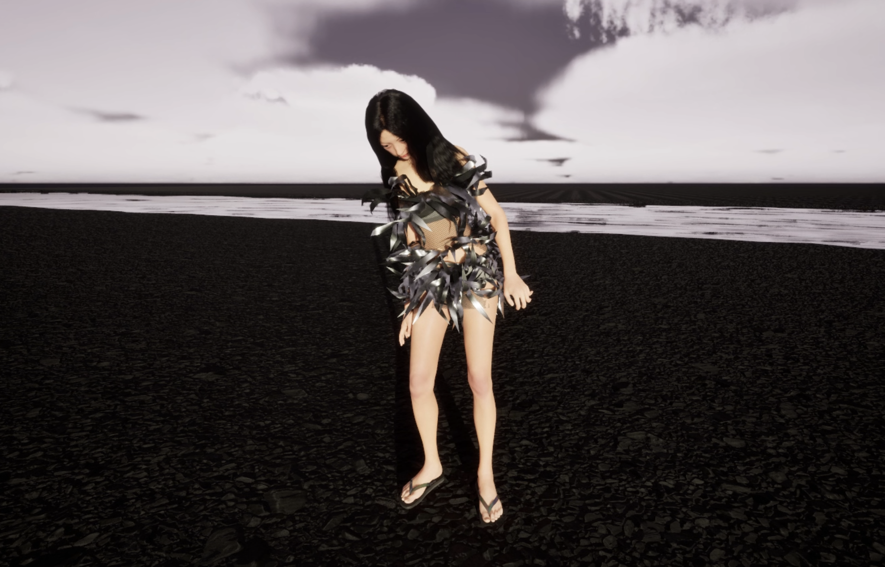
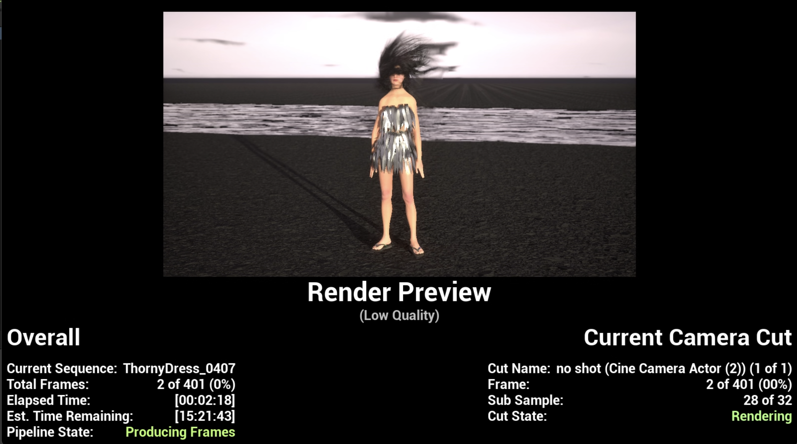
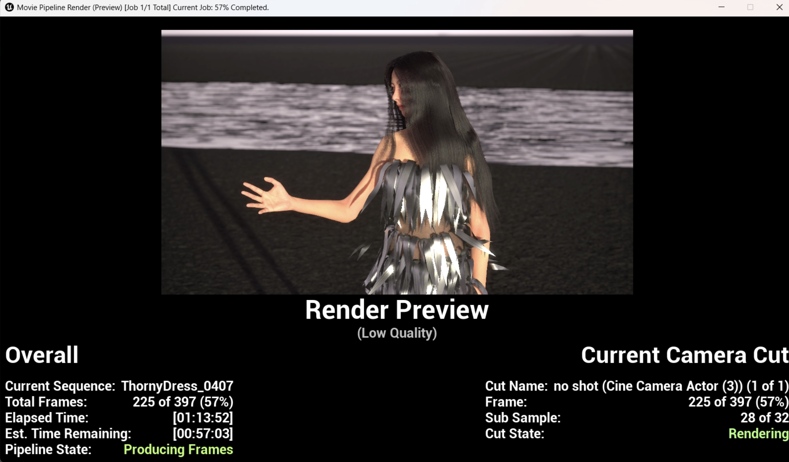
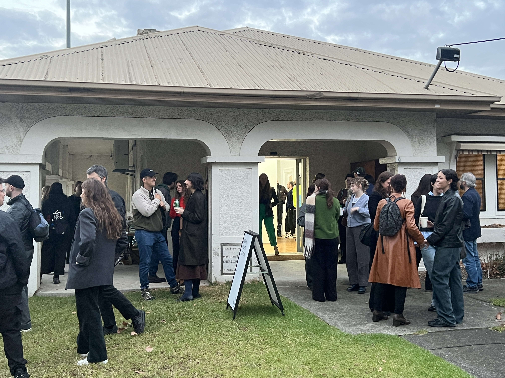
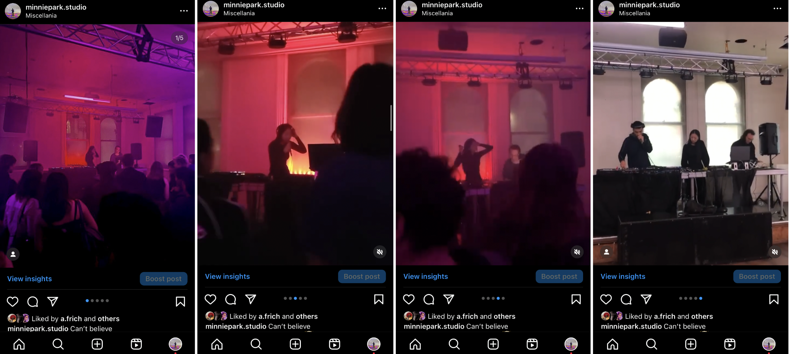
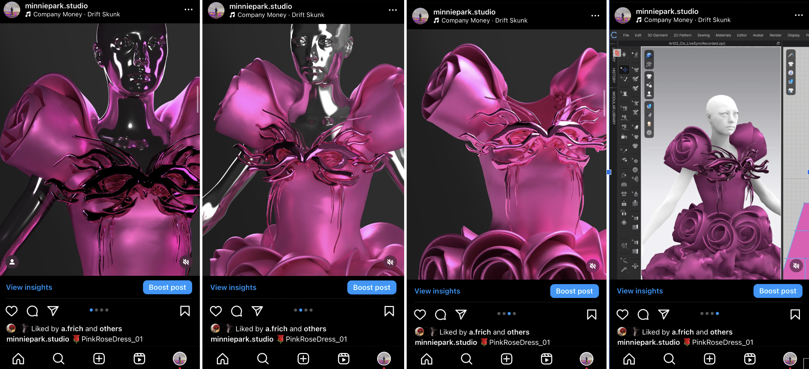

SEM BREAK
0104 - 0704WORK PROGRESS
Artwork 3: Finishing 3

The third environment is themed after thorns, negative emotions, and challenges of life. To convey the feeling of darkness, coldness, and lifelessness, no other colours than grey or chrome are used.
I’ve been thinking about how to depict the negative side of emotions and life challenges in the environment and considered incorporating deep water. I have a fear of deep water due to a few incidents. When I was still an early elementary school student, I was in the Philippines, staying in a villa with a pool, and went into the pool without realising how deep it was. I almost drowned.
Another incident occurred during one of the biggest typhoons, Maemi, in Korea back in 2003. My hometown, Masan city, is located in the bay area, and my apartment was right next to the port. I was in my apartment when Maemi struck, and I saw a giant wave coming towards the apartment through the living room window. The water flooded the basement and the first floor of the building. My apartment was on the 13th floor, so my family was okay, but my parents had to scrap the car. I even remember witnessing someone trying to hold onto a telephone pole using their belt when the wave came over the road. The whole experience was definitely traumatising.
 

So I included a river in the environment. The water's colour is quite dark, almost black, as dark as it can be without completely cancelling the reflection to the point where you cannot see it there. It could be an ocean too, but I thought, with a river, it feels like you can cross it over, and you’ll be able to find the way out more easily than in the ocean. Since I’m planning to render the animation of Mintie going into the water, I wanted to make sure that it’s not too overwhelming for her, even if she is just a 3D character, in a 3D environment, but, I still wanted to do that for her, just in case.
The water system in Unreal is quite fun to explore. It was quite tricky to get used to the system in the beginning, but I have a better understanding of how it works in the environment and how it communicates with the landscape and other actors(objects) in Unreal.
 
After the environment is done, I’ve worked on simulating the thorn dress using LiveSync in Clo3D. I’ve used this for the last dress, and it is more time-efficient than the other workflow, which involves more file imports/exports.
The physics of the dress are quite bouncy. I’ll have to adjust the parameters to make it less glitchy in the animation. But for now, I’ll render some footage as a preview to combine all three renderings into one video along with the tracks that go with each of them.
The videos are 90% done. The environments and dress are all done, I just need to fix a few problems including hair and physics and render the footage again.
The tracks have good foundations as well. Since they will all be in one EP album, I always tend to mix/master again at the end to match the overall style and the tone.

The videos are 90% done. The environments and dresses are all complete. I just need to fix a few problems including hair and physics and render the footage again.
The tracks have good foundations as well. Since they will all be in one EP album, I always tend to mix/master again at the end to match the overall style and tone.
According to the timeline, by week 4, I had to finish Artwork 1, 2, and 3, the three videos of Mintie. However, I had to follow my backup plan, which is to catch up during the semester break.
With the completion of the preview video for all three works, I’ve started to move on to the next one, artwork04, the Unreal game.
I’ve begun by researching and watching tutorials on developing a game using Unreal to finalise the details for the game.
I also finally updated the code works for the weekly blog webpage and updated it on Github. It might be good to incorporate the weekly blog page link into the project webpage later, in case anyone wants to have a closer look at the production progress.
INDUSTRY ENGAGEMENT
Open Night at Seventh Gallery
5:30-8:00pm, Wed 3rd April

This was my second volunteering shift at Seventh Gallery.
They had an open night for a few artists and I helped with content creation/documentation for social media.
I took about 30 photos and short videos and sent it to the community manager.
At the venue, I got to speak to the board members about my meta rose project and they were interested in and requested to invite them to the exhibition! So I did!
They mentioned we can possibly discuss exhibiting the work in the gallery as well! Exciting!
SOCIAL MEDIA
 
During the break, I made two posts.
I realised I hadn’t shared any photos or videos of the live performance I did last year at the end of the semester. It was a collaborative performance with another student/musician, lasting about 10 minutes. We worked on two songs by Ariana Grande. I also noticed that I haven’t posted enough content to represent my music or myself as a musician. So, I’m planning to post more music-related content as well.
Additionally, I posted some render images of the second dress directly from Clo3D. I used Mintie’s body mesh and changed it into a chrome body to match the color palette of the project. I intentionally didn’t include any photos that capture the entire dress, just in case they are too much of spoilers!